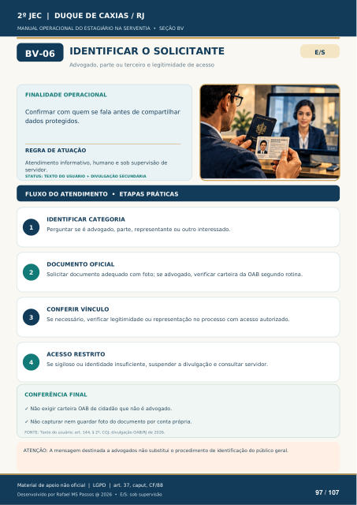

IDENTIFICAR O SOLICITANTE
Advogado, parte ou terceiro e legitimidade de acesso
FINALIDADE OPERACIONAL
Confirmar com quem se fala antes de compartilhar dados protegidos.
REGRA DE ATUAÇÃO
Atendimento informativo, humano e sob supervisão de servidor.
STATUS: TEXTO DO USUÁRIO + DIVULGAÇÃO SECUNDÁRIA
FLUXO DO ATENDIMENTO • ETAPAS PRÁTICAS
IDENTIFICAR CATEGORIA
Perguntar se é advogado, parte, representante ou outro interessado.
DOCUMENTO OFICIAL
Solicitar documento adequado com foto; se advogado, verificar carteira da OAB segundo rotina.
CONFERIR VÍNCULO
Se necessário, verificar legitimidade ou representação no processo com acesso autorizado.
ACESSO RESTRITO
Se sigiloso ou identidade insuficiente, suspender a divulgação e consultar servidor.
CONFERÊNCIA FINAL
Não exigir carteira OAB de cidadão que não é advogado.
Não capturar nem guardar foto do documento por conta própria.
FONTE: Texto do usuário; art. 144, § 2º, CGJ; divulgação OAB/RJ de 2026.
ATENÇÃO: A mensagem destinada a advogados não substitui o procedimento de identificação do público geral.
Ver também o infográfico original (página 97)
